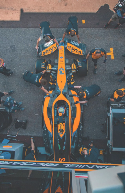

The evolution of Formula 1: past, present and future past, present and future
Formula 1 has come a long way from the daring drivers and simple machines of the 1950s to a modern sport dominated by cutting-edge technology and innovation. In the past, F1 cars were lightweight and fast but dangerous. Drivers raced without seat belts, and the tracks had minimal protection. Revolutionary changes came with new aerodynamic solutions and rear-mounted engines in the 1960s, while turbocharged engines in the 1980s took performance to the next level. In the present, Formula 1 is defined by hybrid power units, energy recovery systems, and real-time data analysis. Innovations like the halo and advanced safety systems have made racing much safer. F1 is also focusing on sustainability, aiming for carbon neutrality and eco-friendly fuel by 2030. In the future, the sport will focus on reducing emissions, new technologies like active aerodynamics, and expanding the digital experience for fans. From the risky racing of the past to sustainable innovations of the future, Formula 1 remains a symbol of speed, precision, and progress.
